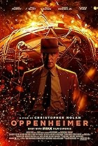
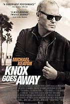
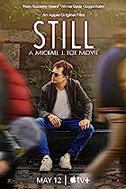
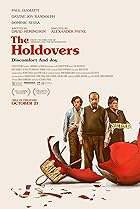

¿Top de las mejores películas del 2023? ¡Claro! ¿Por qué no?
El 2023 fue un gran año para el cine, por eso queremos proporcionarte un top de las mejores películas del
año pasado para que
tengas ideas para cuando te sientes en el sofá y no sepas que ver
Spider-Man: A través del spider-verso
Miles Morales es catapultado a través del multiverso, donde se encuentra con un equipo de
Spider-Personas encargadas de proteger su misma existencia. Cuando los héroes chocan sobre cómo manejar
una nueva amenaza, Miles debe redefinir lo que significa ser un héroe.
Directores: Joaquim Dos Santos, Kemp Powers, Justin K. Thompson | Actores principales: Shameik Moore,
Hailee Steinfeld,
Brian Tyree Henry, Luna Lauren Velez
Pobres Criaturas
La increíble historia sobre la
evolución fantástica de Bella Baxter, una joven devuelta a la vida por el brillante y poco ortodoxo
científico Dr. Godwin Baxter.
Director: Yorgos Lanthimos | Actores principales: Emma Stone, Mark Ruffalo, Willem Dafoe, Ramy Youssef
Oppenheimer

La historia del científico estadounidense J. Robert Oppenheimer y su papel en el desarrollo de la
bomba atómica.
Director: Christopher Nolan | Actores principales: Cillian Murphy, Emily Blunt, Matt Damon, Robert
Downey Jr.
Gojira -1.0
Japón posterior a la guerra está en su punto más bajo cuando surge una nueva crisis en forma de un
gigantesco monstruo, bautizado con el poder horripilante de la bomba atómica..
Director: Takashi Yamazaki | Actores principales: Minami Hamabe, Sakura Ando, Ryunosuke Kamiki, Yuki
Yamada
The first slam dunk
Sigue a Ryota Miyagi, de 17 años, quien lucha por cumplir el sueño de su difunto hermano mayor de
convertirse en una estrella del baloncesto.
Directores: Takehiko Inoue, Haruka Kamatani, Katsuhiko Kitada, Naoki Miyahara, Yasuhiro Motoda, Toshio
Ohashi, Fumihiko Suganuma | Actores principales: Shugo Nakamura, Jun Kasama, Shinichiro Kamio, Subaru
Kimura
Taylor Swift: The eras tour
Experimenta el concierto "Eras Tour", interpretado por la única e inigualable Taylor Swift..
Director: Sam Wrench | Actores principales: Taylor Swift, Mike Meadows, Max Bernstein, Paul Sidoti
Knox goes away

Cuando un asesino a sueldo desarrolla rápidamente una forma evolucionada de demencia, se le ofrece la
oportunidad de redimirse salvando la vida del hijo adulto con quien había estado distanciado.
Director: Michael Keaton | Actores principales: Al Pacino, Michael Keaton, James Marsden, Joanna Kulig
Still

Sigue la vida del querido actor y defensor Michael J. Fox, explorando sus triunfos y tribulaciones
personales y profesionales, y lo que sucede cuando un optimista incurable se enfrenta a una enfermedad
incurable.
Director: Davis Guggenheim | Actores principales: Michael J. Fox, Davis Guggenheim, Tracy Pollan, Sam
Fox
Simón
Simón, un luchador por la libertad venezolano exiliado en Miami, lidia no solo con el trauma, sino
también con una profunda culpa sobre una decisión que debe tomar: quedarse en Miami y comenzar una nueva
vida, o regresar a casa para continuar la lucha contra un régimen tiránico.
Director: Diego Vicentini | Actores principales: Christian McGaffney, Jana Nawartschi, Luis Silva,
Roberto Jaramillo
The Holdovers

Un profesor de historia gruñón en una remota escuela preparatoria se ve obligado a quedarse en el campus
durante
las vacaciones con un estudiante problemático que no tiene a dónde ir y un cocinero afligido.
Director: Alexander Payne | Actores principales: Paul Giamatti, Da'Vine Joy Randolph, Dominic Sessa,
Carrie Preston